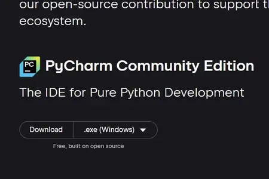
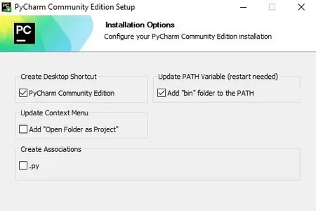
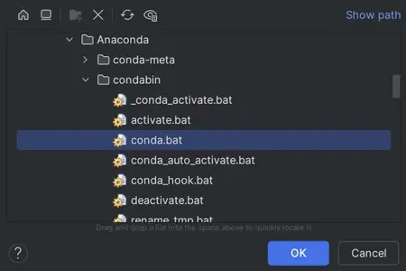
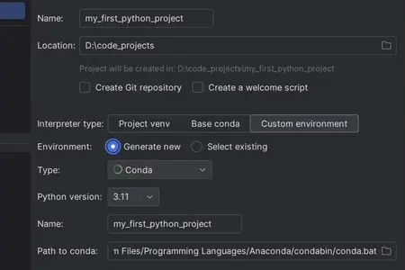
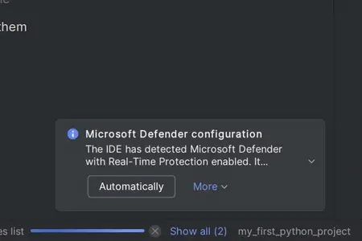

Do không thể hướng dẫn hết toàn bộ các IDE và text editor,
bài viết này sẽ chỉ hướng dẫn sử dụng một IDE duy nhất là
PyCharm.
Bạn có thể sử dụng một IDE khác tùy thích, nhưng sẽ cần phải tự tìm hiểu cách
sử dụng IDE đó.
Đây là các bước để tải xuống và cài đặt PyCharm Community Edition:
Lướt xuống bên dưới và bấm Download
để tải trình cài đặt PyCharm Community Edition.

Lưu ý: Đừng tải nhầm PyCharm Professional Edition nếu bạn không muốn trả phí cho phần mềm này.
Mở trình cài đặt PyCharm lên rồi chọn "Next" 2 lần.
Chọn vào 2 mục trên cùng rồi bấm "Next" sau đó "Install".

Sau khi chạy xong, chọn vào "I want to manually reboot later" rồi bấm "Finish" để hoàn tất quá trình cài đặt.
3. Tạo môi trường lập trình
Mở PyCharm lên.
Chọn New Project để tạo dự án (project) mới.
"Name" là tên của dự án mà bạn đang tạo, bạn có thể đặt tên cho nó là gì cũng được.
Tuy nhiên, cộng đồng Python có quy ước đặt tên dự án bằng
snake_case.
Trong bài viết này, tôi sẽ đặt tên cho dự án là "my_first_python_project".
"Location" là địa chỉ mà bạn sẽ lưu dự án của mình.
Địa chỉ này nên nằm ở một vị trí mà bạn có thể dễ dàng truy cập được.
Để minh họa, tôi sẽ đặt dự án tại "D:\code_projects".
"Interpreter type" là loại
trình thông dịch
mà bạn sẽ sử dụng cho dự án của mình. Ở đây, bạn cần phải chọn "Custom environment".
Ở dòng "Environment", chọn "Generate new" để tạo một môi trường mới.
"Type" là loại môi trường mà chúng ta đang tạo.
Vì mình đang dùng Conda nên hãy bấm vào và chọn "Conda".
"Python version" là phiên bản của ngôn ngữ Python mà ta sẽ cài đặt. Bạn nên chọn phiên bản mới nhất có thể.
Tôi sẽ chọn phiên bản 3.11 vì đó là phiên bản mới nhất tôi có thể chọn vào thời điểm viết bài này.
"Name" là tên của môi trường mà ta đang tạo.
Để dễ dàng nhận diện xem môi trường nào dùng cho dự án nào, ta nên đặt chúng cùng một tên.
Nếu PyCharm hiện ô chữ nền vàng nói rằng "No conda executable found", không sao cả.
Hãy mở bảng lệnh lên và nhập lệnh conda info --base.
Lệnh này sẽ hiển thị cho bạn địa chỉ mà bạn đã cài đặt Anaconda. Nhớ sao chép địa chỉ đó lại.
Bấm vào Select path rồi dán địa chỉ mà bạn vừa sao chép ra.
Mở thư mục cài đặt Anaconda (thường tên là "anaconda3" – cái tên đó nằm ở cuối địa chỉ mà bạn sao chép)
ra, chọn vào thư mục "condabin" rồi bấm vào file "conda" sau đó bấm
OK bên dưới.

Bạn không cần thực hiện các bước này nếu từ đầu PyCharm
đã tự động tìm được trình thực thi Conda của bạn.
Hiện tại, các thiết lập của tôi trông như thế này, bạn kiểm tra kỹ lại một lần nữa nhé.

Nếu đã vừa ý với các thiết lập của mình rồi thì hãy nhấn OK.
Nếu bạn dùng Windows, có thể PyCharm sẽ hiện thông báo như thế này.
Hãy bấm vào Automatically.

Bạn đã khởi tạo thành công một môi trường để lập trình Python.